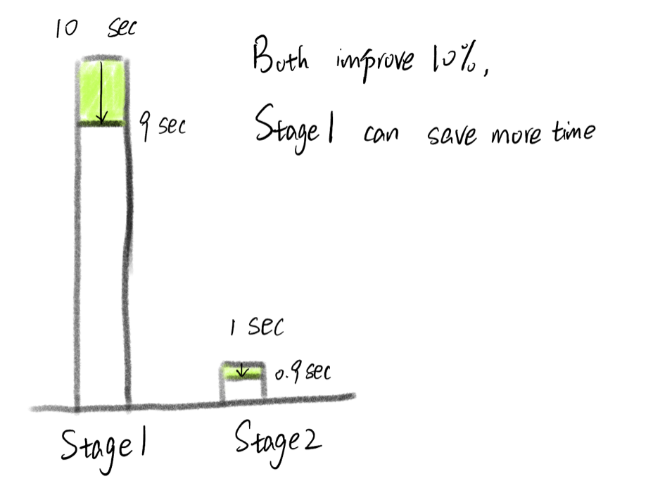
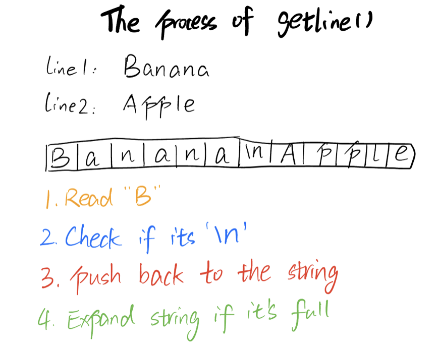
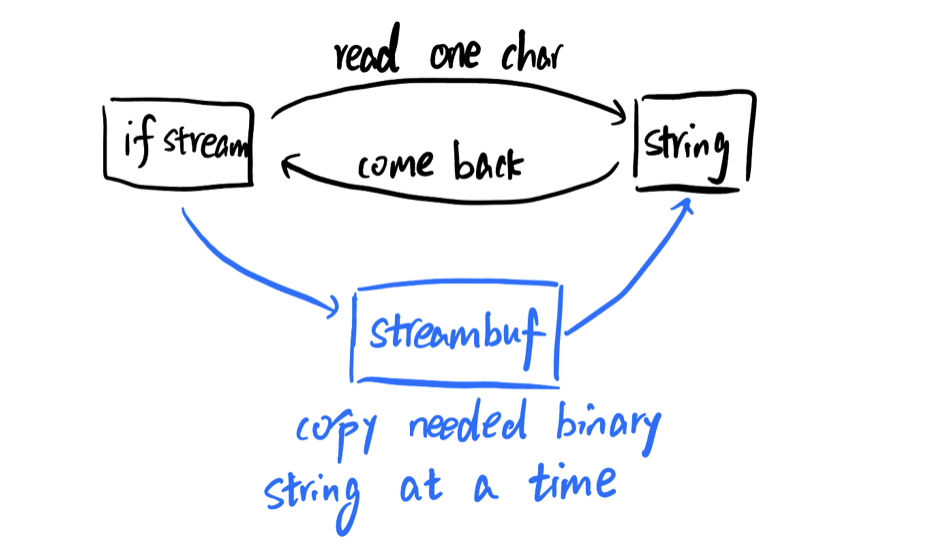
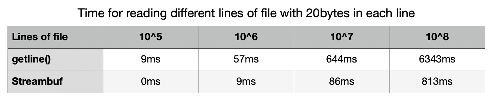
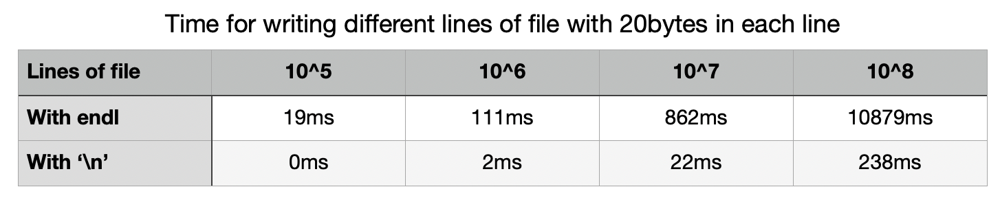

Nov 27, 2025
I have a project to do in my data structure class. And the goal about the project is to optimize the performance(faster speed and less memory allocation). There are lots of parts that can influence the performance, in fact, every line of the code can potentially make a difference to the final result. I would like to discuss some of my thoughts and learning about time optimization.
Luckily, things are not that bad, we don't necessarily need to improve every detail. For example, if a program involves reading a file, processing data, processing user input, writing to a file, and we need 10 seconds for reading a file and only 1 second for processing data. Then, improve the speed for processing data seems trival, even though you can siginificantly shortern the time from 1 second to 0.1 second(that's a lot of improvement!). It might be better for you to try to think of ways to shortern the time of reading a file.
But, of course, the first thing is to know the approximate time of each stage, it's not that hard if you know the time complexity, size of data and the computing speed of a computer. You can approximate each stage's time as below:
$$ \text{Approximate Time(Second)} \approx \frac{\text{Time Complexity} \times \text{Size of Data}}{\text{Computations Per Second}} $$Mordern computers can usually operate 3-6 billion times every second, and the Intel Core i5-11600k can operate at 346 billion times per second. You can also test your own computer's speed by writing a program. But since every part of the program runs on the same computer(same computations per second), we can just omit it and simply compare the product of time complexity and the size of data.
Now that we know the part of the program mostly needed to improve, how to optimize it? There are 3 main ways to do it:
For the data structure, it's about how we store data(memory) and how we use data when we need them(algorithm). For the second algorithm part, it's about how can we design a better way that can let computer computes less time. For the last part, I mention here because even if everything looks perfect, there might still be some space for improvement in your code, since some code(e.g. standard library code) in C++ is also implemented by ordinary C++ code, it might be easy for clients to use, but might not be the most efficient way to reach the goal of best performance. For example:
size_t hash_value = hash{}(input_string)
Here C++ standard library gives us an function: "hash
I looked up some references and mostly thanks to this book: Optimized C++, I found some ways to improve my project's performance, and they were proved by my own computer. I improve them by changing the code on the surface, but essentially it's for the sake of algorithm. Below are some of the best ways that I would encourage you to try:
When we need to read a file, we usually use getline() like this:
std::string Read_to_string(std::ifstream& ifstream,
std::string& result)
{
std::string line;
while (std::getline(ifstream, line))
{
result += line + "\n";
}
return result;
}
Here is how getline() works: the getline function extracts the character from ifstream one by one until it finds the delimitation character('\n'), and concatenate them into a string, which is called a line. However, it's not the best way to read a file, since it needs to check if each character is '\n' one by one, and concatenate them one by one, which is slow(although the time complexity is still O(n)).
A better way to faster the speed is to use streambuf, streambuf is the binary version of the stream, for example, 'a' will be stored as '01100001' in binary string. By getting the streambuf and using segtn() to get the character from the streambuf(binary string) directly, we can have a much faster speed(still O(n), but can omit a lot of uncessary computes for each character). The core code is shown as below:
ifstream.rdbuf()->sgetn(&result[0], size);
Here, ifstream.rdbuf() returns the streambuf of the ifstream, and sgetn(&result[0], size) copys the "size" bytes of the streambuf directly, stores the binary string into the result string. It skips a lot of uncessary steps when using getline(), such as examining if it's newline('\n'), allocating memory when the string hits the maximum size, etc. It's fair to understand like this:
I tested the time of the 2 above codes in different size of files: I kept the size of each lines as 20 bytes, the only difference of different files are the number of the lines. Here are my results:
When using streambuf and extract streambuf by sgetn(), it's almost 8 times faster as using getline(), although the relative propotion doesn't get larger as the file size getting larger(both O(n) time complexity), it's still a huge improvement when file size is big!
Besides reading file, writing a file is also time consuming, it's because we need to write the information into a disk, which is more hardware related. To introduce our optimal strategy, I will introduce flush first.
Flush is used for transfering buffer data from temporary memory into permanent memory. Output streams must be flushed for their contents to be written to the output device. However, the fact that we usually underestimated is when we using endl, it will automatically flush the stream it's writing, which will consume a lot of unnecessary computes. And we don't need to use flush until we need to write the stream into a file. Thus, the thing we need to do is to simply change the code from
file << line << endl;
to:
file << line << '\n';
Where '\n' can have the same effect as endl in most cases. Below are my tests in writing into different size of files:
Generally, it's around 40 times faster with '\n' compared with endl, and the propotion doesn't scale when the file gets bigger, which proves they are still in the same time complexity(O(n)).
The above is just some attempts I had tried, but the whole process of optimization is nearly the same:
Here I mainly discussed 2 efficient ways to shorten the time of reading and writing files, I choose to emphasize this because when the time of reading and writing to files is enormous compared to the other computation part such as data processing. You can try to test the difference on your own computer, code is here.
Last modified on Nov 27, 2025